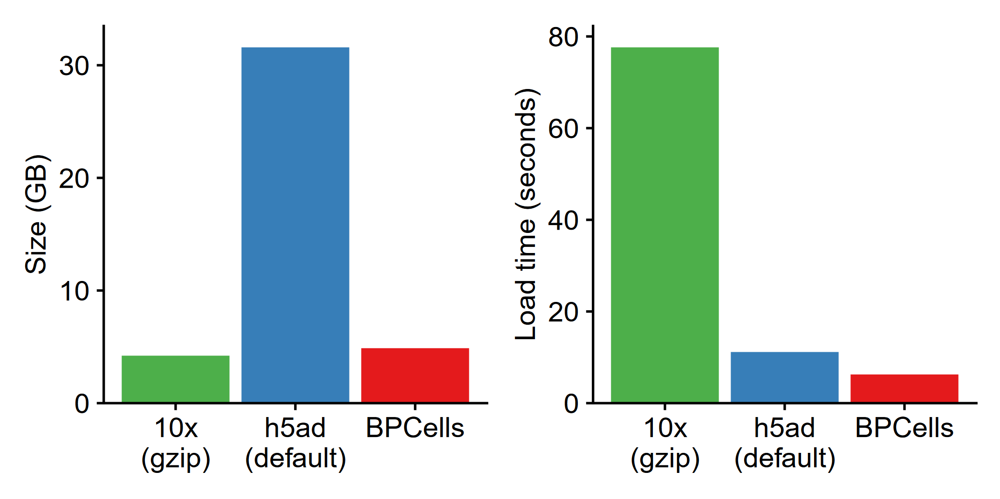

Note: these performance benchmarks are preliminary while our manuscript is in preparation, though every effort has been made to present a fair comparison with other tools. Fortunately, it is straightforward to install and test BPCells on your own dataset to replicate our claims.
RNA-seq normalization + PCA
Because BPCells can perform all operations streaming from disk, it is able to use dramatically less memory for operations that read all matrix values. This chunking strategy is similar to tools like DelayedArray. We have extensively optimized the C++ code to avoid slowdowns commonly caused by using disk-backed computations.
In the benchmark below, we show the time and memory to perform a basic workflow of data import, normalization, variable gene selection, and PCA. We reproduce the PCA results of existing tools to within numerical precision, starting from raw counts1.

Note that Seurat in this plot crashes on the 1.3M cell dataset due to R sparse matrices not supporting over roughly 2 billion non-zero entries in a matrix. By utilizing Seurat v5’s BPCells integration, it is possible to perform analyses on million cell datasets without downsampling.
Bitpacking compression
Counts matrices (RNA or ATAC)
Single cell counts matrices are stored as sparse matrices. With traditional formats like AnnData or 10x hdf5 feature matrices, there is an inherent tradeoff between storage size and speed of loading. Gzip-compressed files are small, but slow to read.
BPCells uses bitpacking compression to provide 4-6x smaller storage for counts matrices compared to an uncompressed binary format (e.g. AnnData’s default h5ad settings2). A single thread can load the matrix data faster than reading uncompressed data in many cases, due to the smaller data size and extremely fast decompression3.
Benchmark storing + loading a 1.3M cell RNA-seq experiment from 10x Genomics. 
Fragment alignments (ATAC)
Single cell ATAC-seq data is stored as lists of fragment alignments, including chromosome, start+end coordinates, and cell ID. The storage space for the BPCells bitpacked format is about 2x smaller than a 10x fragments.tsv.gz file. The storage format includes a lightweight genome-position index to enable fast loading of data from a selected genome location.
BPCells can decompress about 70 million fragments per second with a single core, compared to about 5 million fragments per second with a 10x fragments.tsv.gz file (14x faster). Compared to ArchR arrow files, BPCells is also about 2x smaller with ~10x faster import times from fragments.tsv.gz files.

ATAC-seq overlap calculations
BPCells stores fragments in a genome-indexed format that also enables fast seeking by genome location. This helps for visualization of selected genomic loci, as well as fast calculations of cell x peak matrices. It is often necessary to re-quantify the cell x peak matrices from fragments when comparing datasets with different original peak calls. Our implementation is about 40x faster than ArchR when calculating overlaps at 100k peaks across the genome, and over 500x faster when calculating overlaps at just 10 peaks. This is due to the fact that BPCells has fragments sorted by genome coordinate, whereas arrow files sort by cell then genome coordinate.

Our peak matrix overlap calculation runs at a rate of about 25 million overlapping fragments per second, which is fast enough that it would bottleneck on I/O speed rather than computation when reading from a 250MB/s hard drive if bitpacking compression were not available to reduce the I/O bandwidth.